The Challenge
The goal was to create an online tea and coffee shop that would be as pleasing to use as possible. So much of ecommerce is fraught with complexity and confusion, inevitably leading to missed opportunities for all involved. It’s time to see the careful, deliberate process of user-centered design applied to this special niche of online shopping. Above all, the experience of searching, browsing, and making a purchase should be effortless. Additionally, a successful online tea and coffee shop must provide ample, detailed product information in a way that is easily digested and stimulating to the senses.
The Solution
Through the process of discovery and subsequent iteration, an attractive online store emerged that would help anyone, from the most choosy tea drinker to a casual coffee browser, navigate and buy exactly what they want without headaches. Search bars are consistently prominent throughout the site, and in each category section, narrowing down one’s options is a straightforward on or off button for any mixture of parameters, such as dark roast coffees from Asia or all flavored green teas. The most particular users can always quickly and easily keyword search for the exact variety they want and the checkout process is a very clear, linear, and relaxed step-by-step process.
Click to view InVision prototype
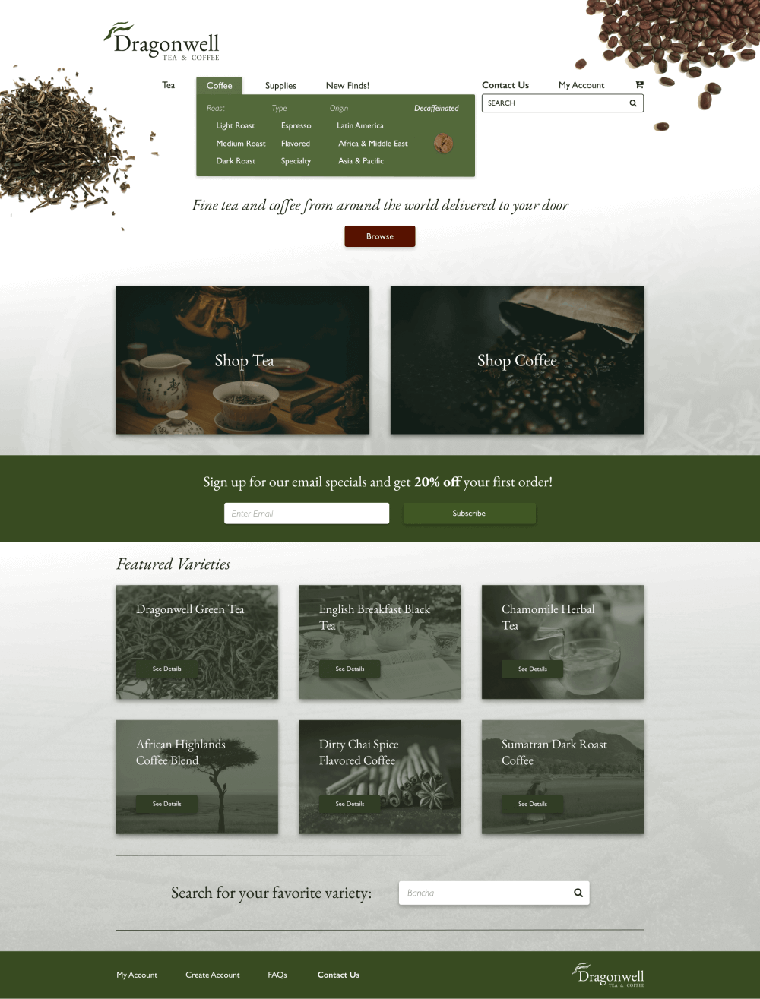
Homepage with carefully organized shopping category hover menu. Articles on categorization from the Baymard Institute informed design.
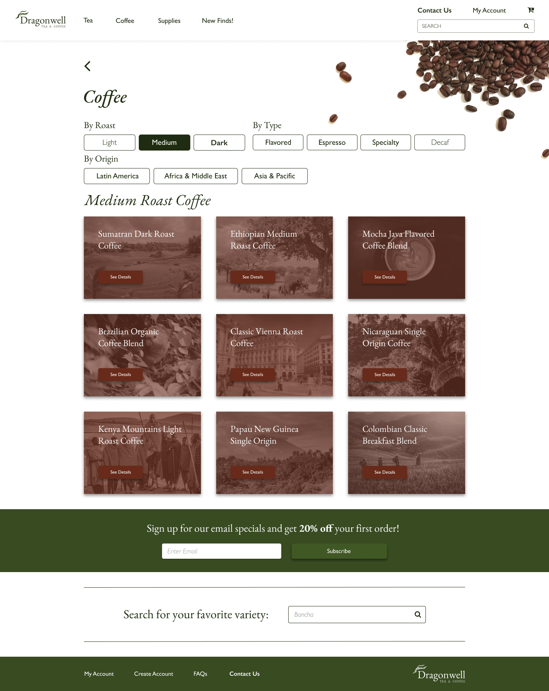
Coffee category page showcasing easily changeable and combinable filter options.
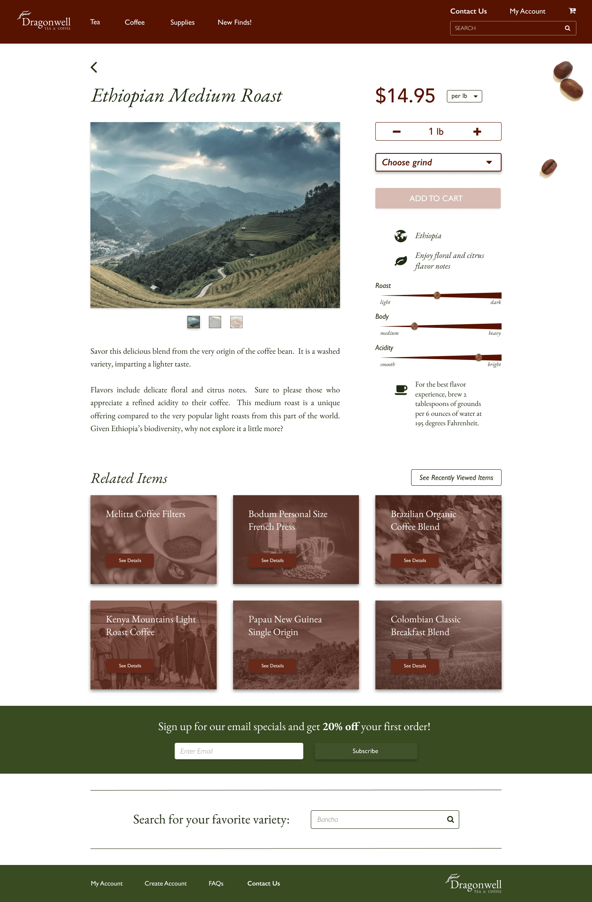
Engaging, informative, and detailed product page with links back to related and recently viewed items.
The Process
The process began with a survey from which I gleaned the main desires of potential online tea and coffee shoppers. Their main concerns were regarding ease of navigation, search, and browsing, plus a painless checkout. Also important was a desire for more clarity and accuracy with product information through large photos and ample specifications.
Competitive analysis gauged the caliber of service, usability, and aesthetics of other worthy competitors in the tea and coffee space. Peet’s Coffee, The Coffee Bean & Tea Leaf, and McNulty’s Tea & Coffee were formidable examples to learn from.
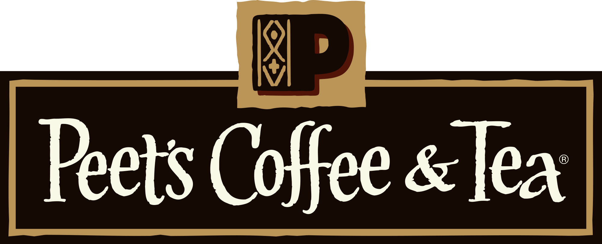
A prestigious brand known for rich flavors. The website color scheme definitely reflects this, but could use some aesthetic updating and greater checkout ease.
This tea and coffee source is very popular in southern California. Their website has crisp, modern branding, but is rather light on tea choices and visually dry overall.
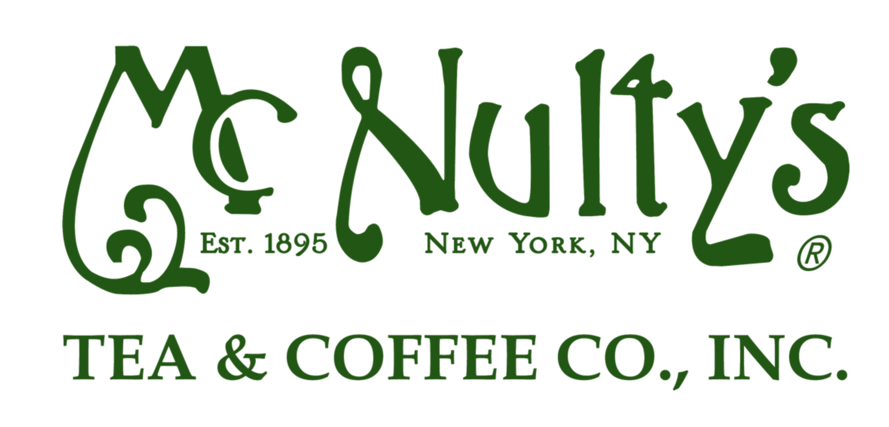
I admire McNulty's sense of history and warm neighborhood ethos. Their website would benefit from a more refined and readable use of fonts and colors.
Oriented with these insights, I moved on to creating personas that showcased three users needing ease of precise search, ease of ordering and re-ordering, and ease of browsing with straightforward ordering and shipping.
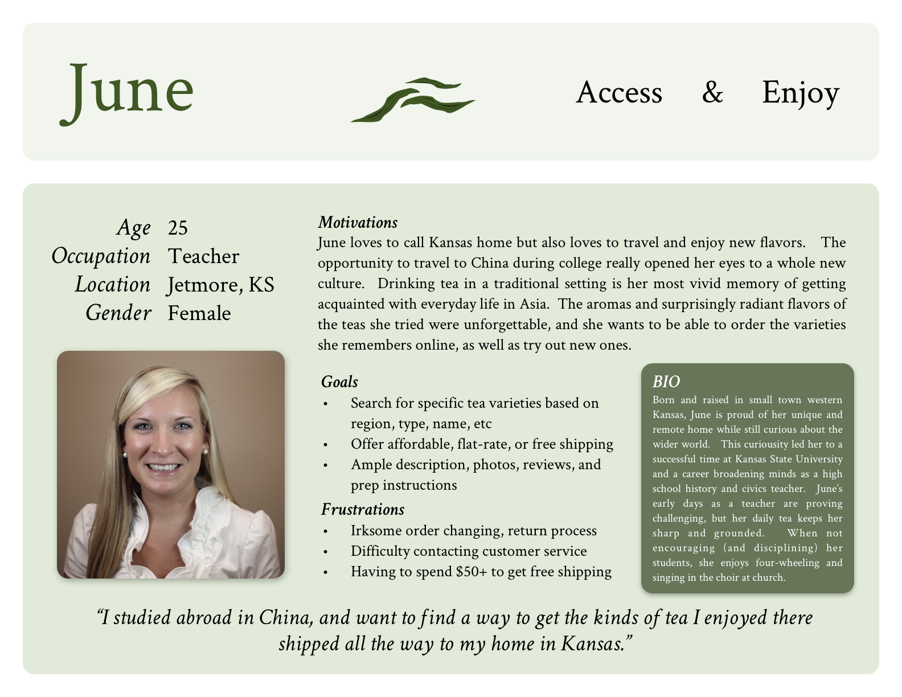
Sample persona based on a rural user needing affordable and straighforward shipping options. Click here to open all three personas as a PDF file in a new tab.
Cataloging all potential tea and coffee shopping tasks into user stories and then constructing user flows from them fleshed out each and every step involved in browsing and making a purchase or requesting a change or refund. These would enable the creation of wireframes that address every user need in a given flow.
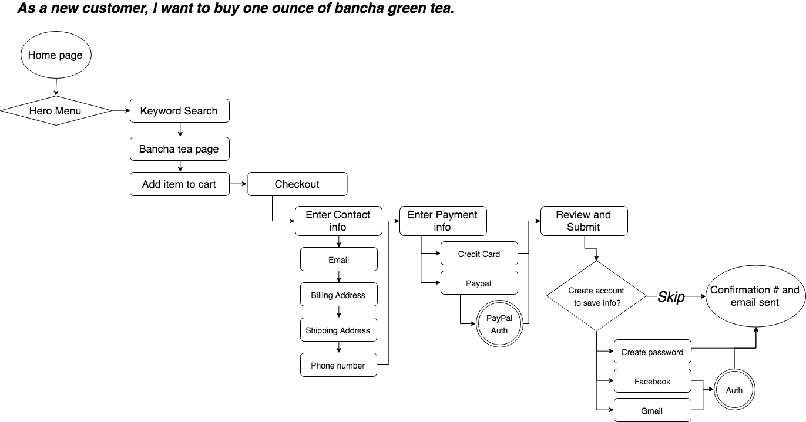
Sample user flow. Click here to open more flows as a PDF file in a new tab.
Branding & Visual Design
At this stage, with relatable hypothetical users and their stories more fully in view, and having analyzed competitors, I began on branding. I created a color palette inspired by the earthy but radiant green color of bancha green tea leaves. Rather than pair this with the obvious dark brown of coffee, I chose a more complementary deep red that isn’t far from brown but that conveys more of a richness, energy, and refinement that would speak to drinkers seeking both invigoration and subtlety from their tea and coffee.
I named the shop after a famous variety of green tea from China called Dragonwell, sure to spark the imagination of tea connoisseurs as well as anyone seeking a warm and flavorful energy boost. The chosen fonts further emphasized refinement with EB Garamond conveying handmade beauty and centuries-old tradition, and Gill Sans serving as a clean, similarly shaped, sans-serif contrast better for buttons, labels, and menu items needing cleaner readability.
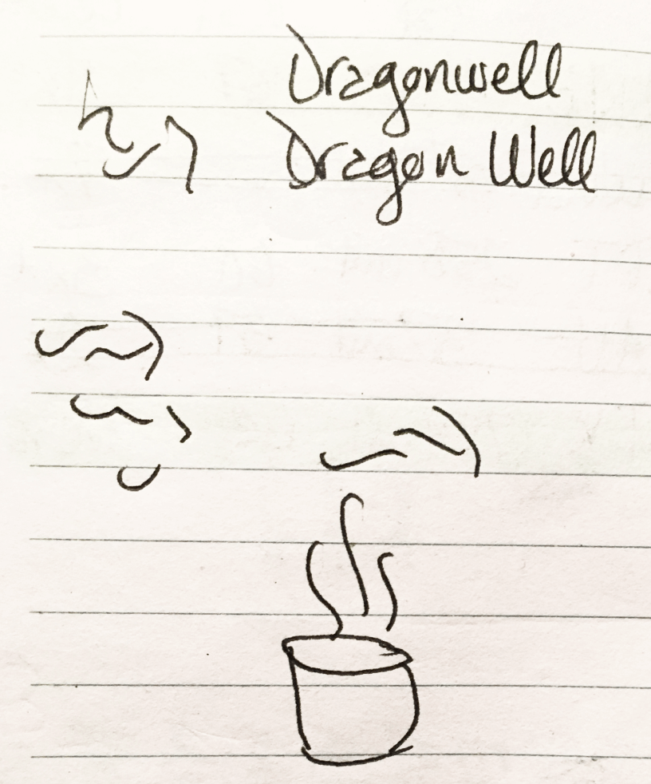
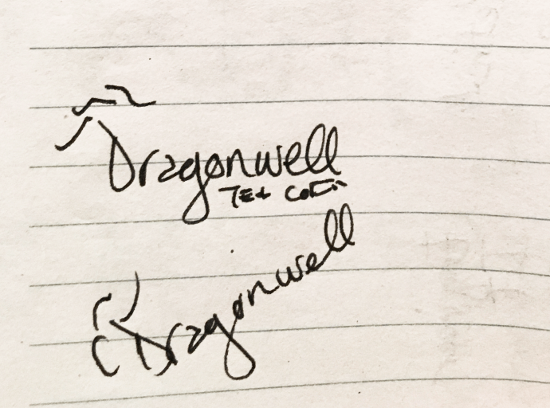
Above is some sketching I did to create a logo. I decided to focus on the timeless, elegant Garamond text itself but wanted to add an ornament based on the long, twisting, verdant beauty of premium green tea leaves. In other instances, sketching helped digest feedback from early stage wireframe user testing.
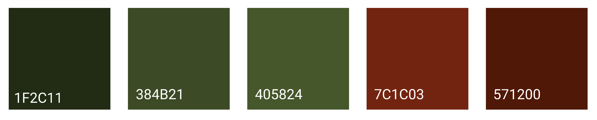
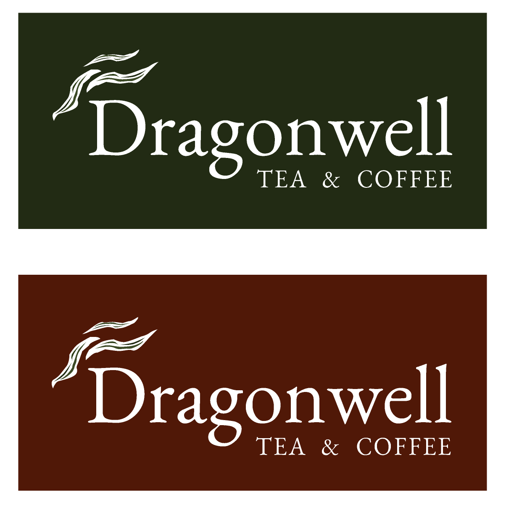
Click here to open a more in-depth style guide as a PDF file in a new tab.
Next began the wireframing stage, which brought to light numerous issues regarding basics like proper sizing of fonts as well as clickability of category labels and header menu usability. User testing feedback at this stage regarding menu and button clarity informed the subsequent interface design.
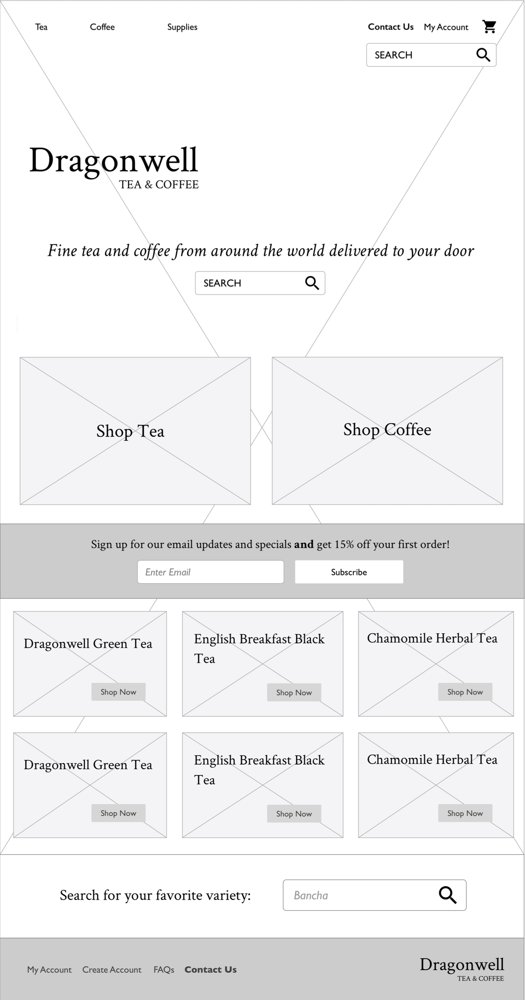
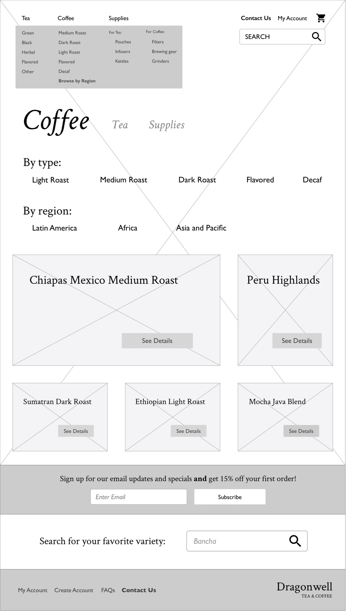

A few sample wireframes made in OmniGraffle. Click here to open more as a PDF file in a new tab.
Moving into the full mockup stage, a series of A / B tests on UsabilityHub influenced elements of the layout, allowing potential users to choose between alternative hero layouts, header spacings, and payment approaches. Here are those examples:
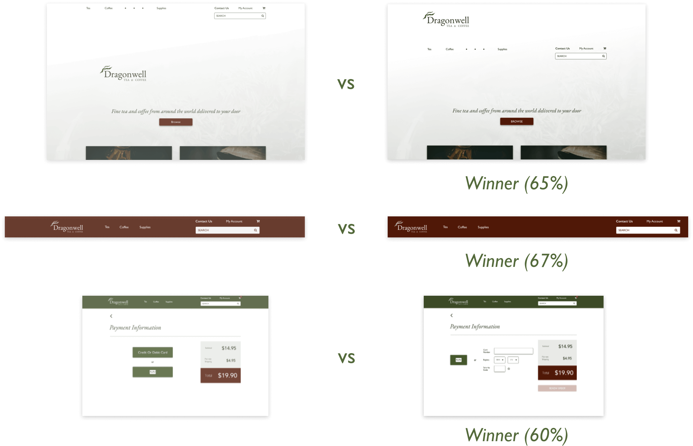
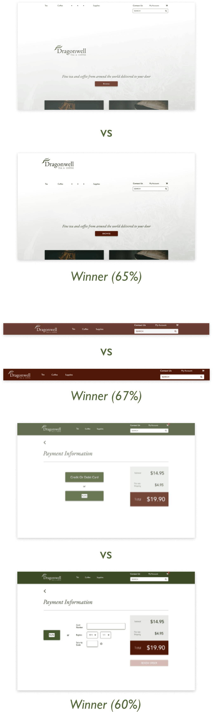
Creating the mockups required discernment in applying color and ample effort to enhance the design with images in a refined way. Through further user testing, the header product menu became more clear for users hovering, and category limiting buttons more obviously clickable. One user recommended the removal of a superfluous call to action on the home page and a tightening of still very open whitespace. Background images of coffee beans and tea leaves filled in nicely but were too zoomed in and obstrusive on the coffee page, impeding browsing by requiring extra scrolling. This particular user also recommended improvements to the layout of the category buttons. Another user thought the search bars were too commanding so I made them blend in more to the background while keeping them prominently accessible for the users who would surely want them for a quick and precise experience. See examples below:
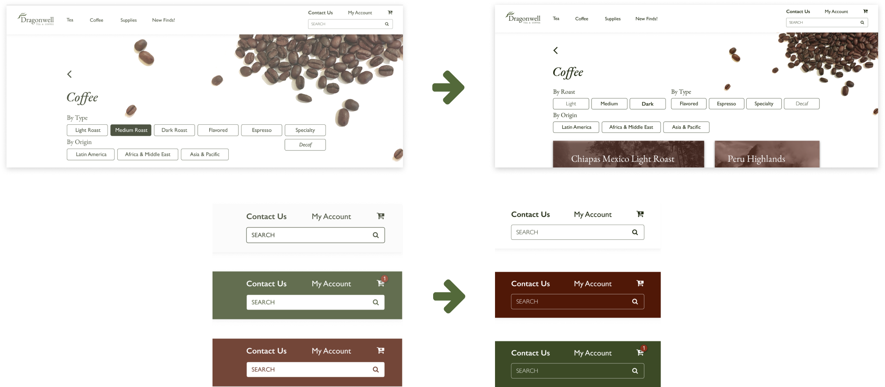
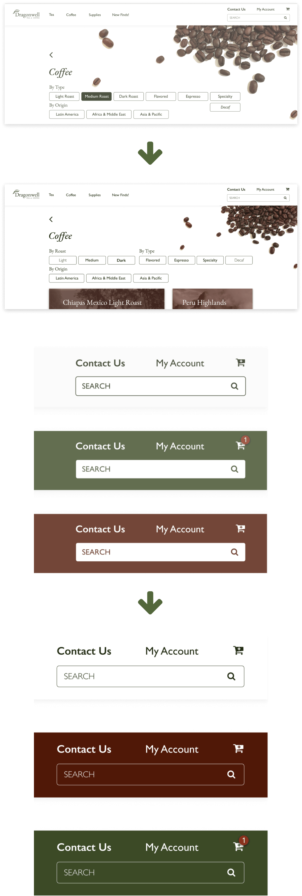
deer deer deer deer deer deer deer deer deer deer deer deer deer deer deer deer deer deer
Conclusion
Creating Dragonwell Tea & Coffee proved to be a sizable challenge, given the complexity of something as previously unassuming as an online tea and coffee shop. The slow and steady process of research and testing, however, made my purpose increasingly clear. Thanks to repetitions in the wireframing, mockup, and prototyping stages, a respectable design came into view that should begin to be worthy of most tea and coffee drinkers. It meets their needs in terms of overall navigational clarity, product detail, and visual enjoyment.
Through this process, I learned the importance of testing, and, indeed, the pleasure of it. As a user-centered designer, I’m thankful to not have to make too many “shots in the dark”, but rather come up with a couple design ideas and consult potential users on what would be most usable and/or visually agreeable before proceeding. Soliciting comments on my A/B tests allowed for especially valuable insights. I would have liked to have done much more of this testing throughout the process, and particularly more sketching and brainstorming early on.
Designer John Maeda in his DesignInTech reports helpfully distinguishes “classical designers”, who are an authority in creating what is “perfect, crafted, and complete”, from “computational designers”, who employ design thinking in service of work that is never complete and always open to fresh analysis and further testing in a constantly changing world. While I need to move on to new things for now, as a member of the latter category of designers, I know Dragonwell is far from and truly never “final.” I also see that throughout its creation, I could have opened any number of elements and assumptions up to testing earlier and more constantly during the process. In this way, I would have merely skillfully facilitated the creation of an authentically and deeply user-centered product that steadily emerged almost of its own accord, as free as possible of unexamined assumptions.
Click to view InVision prototype
Back to top